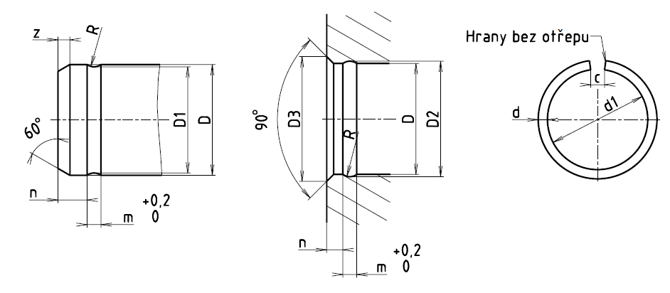

Příklad označení pojistného kroužku z ocelového patentovaného drátu kruhového průřezu s jemnými úchylkami na hřídel nebo do díry o jmenovitém průměru D = 50 mm:
POJISTNÝ KROUŽEK ČSN 02 2925.2 – 50
POZNÁMKY
Mezní úchylky průměru nenapnutého kroužku stanoví ČSN 02 6010 a označuje je první doplňkové číslice:
1 … hrubé a střední,
2 … jemné;
Mezní úchylky průměrů
| pro D [mm] | Úchylky D1 [mm] | Úchylky D2 [mm] |
|---|---|---|
| 4 až 18 | 0 | +0,1 |
| −0,1 | 0 | |
| 20 až 50 | 0 | +0,2 |
| −0,2 | 0 | |
| 55 až 125 | 0 | +0,3 |
| −0,3 | 0 |
| D | d | d1 | D1 | z | R | n | m | D2 | D3 | Hmotnost [g] |
|---|---|---|---|---|---|---|---|---|---|---|
| 4 | 0,8 | 3,4 | 3,6 | 1 | 0,4 | 1,6 | 0,8 | 0,04 | ||
| 5 | 0,8 | 4,4 | 4,6 | 1 | 0,4 | 1,6 | 0,8 | 0,05 | ||
| 6 | 0,8 | 5,4 | 5,6 | 1 | 0,4 | 1,6 | 0,8 | 0,06 | ||
| 7 | 0,8 | 6,2 | 6,6 | 1 | 0,4 | 1,6 | 0,8 | 7,4 | 8,2 | 0,07 |
| 8 | 0,8 | 7,2 | 7,6 | 1 | 0,4 | 1,6 | 0,8 | 8,4 | 9,2 | 0,08 |
| 10 | 0,8 | 9,2 | 9,6 | 1 | 0,4 | 1,6 | 0,8 | 10,4 | 11,2 | 0,11 |
| 12 | 1 | 11 | 11,6 | 1,6 | 0,6 | 2,5 | 1 | 12,6 | 13,5 | 0,19 |
| 14 | 1 | 13 | 13,4 | 1,6 | 0,6 | 2,5 | 1 | 14,6 | 15,5 | 0,23 |
| 16 | 1,6 | 14,5 | 15 | 2 | 1 | 3 | 1,8 | 17 | 18 | 0,71 |
| 18 | 1,6 | 16,5 | 17 | 2 | 1 | 3 | 1,8 | 19 | 20 | 0,81 |
| 20 | 2 | 18,2 | 18,8 | 2,5 | 1,2 | 4 | 2,2 | 21,2 | 22,5 | 1,32 |
| 22 | 2 | 20,2 | 20,8 | 2,5 | 1,2 | 4 | 2,2 | 23,2 | 24,5 | 1,47 |
| 24 | 2 | 22,2 | 22,8 | 2,5 | 1,2 | 4 | 2,2 | 25,2 | 26,5 | 1,63 |
| 25 | 2 | 23,2 | 23,8 | 2,5 | 1,2 | 4 | 2,2 | 26,2 | 27,5 | 1,7 |
| 26 | 2 | 24,2 | 24,8 | 2,5 | 1,2 | 4 | 2,2 | 27,2 | 28,5 | 1,79 |
| 28 | 2 | 26,2 | 26,8 | 2,5 | 1,2 | 4 | 2,2 | 29,2 | 30,5 | 1,94 |
| 30 | 2 | 28,2 | 28,8 | 2,5 | 1,2 | 4 | 2,2 | 31,2 | 32,5 | 2,1 |
| 32 | 2,5 | 30 | 30,5 | 3 | 1,6 | 5 | 2,8 | 33,5 | 35,5 | 3,47 |
| 35 | 2,5 | 33 | 33,5 | 3 | 1,6 | 5 | 2,8 | 36,5 | 38,5 | 3,85 |
| 38 | 2,5 | 36 | 36,5 | 3 | 1,6 | 5 | 2,8 | 39,5 | 41,5 | 4,25 |
| 40 | 2,5 | 38 | 38,5 | 3 | 1,6 | 5 | 2,8 | 41,5 | 43,5 | 4,43 |
| 42 | 2,5 | 40 | 40,5 | 3 | 1,6 | 5 | 2,8 | 43,5 | 45,5 | 4,54 |
| 45 | 2,5 | 43 | 43,5 | 3 | 1,6 | 5 | 2,8 | 46,5 | 48,5 | 4,9 |
| 48 | 2,5 | 46 | 46,5 | 3 | 1,6 | 5 | 2,8 | 49,5 | 51,5 | 5,24 |
| 50 | 2,5 | 48 | 48,5 | 3 | 1,6 | 5 | 2,8 | 51,5 | 53,5 | 5,51 |
| 55 | 3,15 | 52 | 53 | 4 | 2 | 6 | 3,5 | 57,5 | 60 | 9,35 |
| 60 | 3,15 | 57 | 58 | 4 | 2 | 6 | 3,5 | 62,5 | 65 | 10,3 |
| 65 | 3,15 | 62 | 63 | 4 | 2 | 6 | 3,5 | 67,5 | 70 | 11,3 |
| 70 | 3,15 | 67 | 68 | 4 | 2 | 6 | 3,5 | 72,5 | 75 | 12,0 |
| 75 | 3,15 | 72 | 73 | 4 | 2 | 6 | 3,5 | 77,5 | 80 | 12,9 |
| 80 | 3,15 | 77 | 78 | 4 | 2 | 6 | 3,5 | 82,5 | 85 | 13,9 |
| 85 | 3,15 | 82 | 83 | 4 | 2 | 6 | 3,5 | 87,5 | 90 | 14,8 |
| 90 | 3,15 | 87 | 88 | 4 | 2 | 6 | 3,5 | 92,5 | 95 | 15,8 |
| 95 | 3,15 | 92 | 93 | 4 | 2 | 6 | 3,5 | 97,5 | 100 | 16,8 |
| 100 | 3,15 | 97 | 98 | 4 | 2 | 6 | 3,5 | 102,5 | 105 | 17,3 |
| 105 | 3,15 | 102 | 103 | 4 | 2 | 6 | 3,5 | 107,5 | 110 | 18,2 |
| 110 | 3,15 | 107 | 108 | 4 | 2 | 6 | 3,5 | 112,5 | 115 | 19,2 |
| 115 | 3,15 | 112 | 113 | 4 | 2 | 6 | 3,5 | 117,5 | 120 | 20,2 |
| 120 | 3,15 | 117 | 118 | 4 | 2 | 6 | 3,5 | 122,5 | 125 | 21,1 |
| 125 | 3,15 | 122 | 123 | 4 | 2 | 6 | 3,5 | 127,5 | 130 | 22,1 |